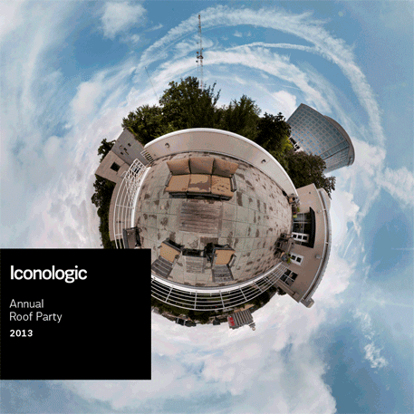
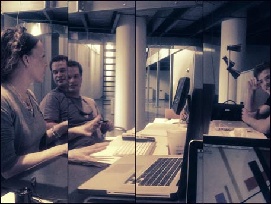

By Andrew Whited on August 1, 2013
Apparently, July 12th is kind of a big deal. Don’t believe us? Just watch.
July 12 Party from Iconoclasts on Vimeo.
By Andrew Whited on August 1, 2013
A flyer created by Andrew inviting Ben’s pals over for some cold brews and and hot barbecue.
By Andrew Whited on August 1, 2013
A nifty gif invitation for the Iconologic’s legendary annual party designed by our very own King of the Grids aka Andrew.
By Andrew Whited on August 1, 2013
Wow.
It’s hard to imagine that I will not be coming into the office, sitting at my desk, interacting with all of the great people here, and designing as an Iconoclast at Iconologic anymore. It doesn't feel like an end. It feels out of place to say goodbye. And, it really isn't an end. On Monday morning everyone will come back to their desk and work on the same projects. The things that I am working on will continue to be worked on, refined and built. In a month, new interns will come and design. School has edges, it is constrained in a period of time. It’s finite. This is not the case in the real world. As far as the office is concerned, today is an arbitrary date in the midst of the work cycle, not an end.
But today is a beginning in some ways: I will be in another state on Monday, I will be working on entirely new projects, and I will start my last semester at Auburn University. There is no doubt that the next three months hold incredible opportunities for growth, fun, and adventure.
My context is changing and new commitments are starting, but my experience with Iconologic is neverending. The things I have learned, the people I’ve encountered, the growth I have undergone, and my passion for design are forever. The lessons I have learned from Iconologic will stay very dear to me. The impact everyone has had on me is not going to be forgotten. The way that I approach design problems, my process of materializing ideas, and my joy for designing has only grown stronger.
That is why it feels strange to say goodbye. I am leaving a tangible place, but I am not leaving what I associate with Iconologic: thoughtful design, genuine interaction, and the joy of creating.